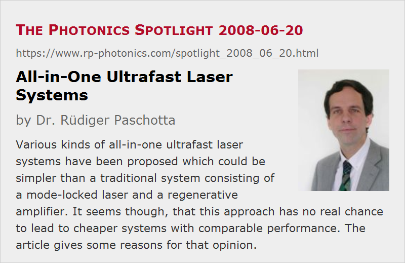

All-in-One Ultrafast Laser Systems
Posted on 2008-06-20 as a part of the Photonics Spotlight (available as e-mail newsletter!)
Permanent link: https://www.rp-photonics.com/spotlight_2008_06_20.html
Author: Dr. Rüdiger Paschotta, RP Photonics Consulting GmbH
Abstract: Various kinds of all-in-one ultrafast laser systems have been proposed which could be simpler than a traditional system consisting of a mode-locked laser and a regenerative amplifier. It seems though, that this approach has no real chance to lead to cheaper systems with comparable performance. The article gives some reasons for that opinion.

Ref.: encyclopedia articles on ultrafast lasers, ultrafast amplifiers, regenerative amplifiers
Some applications e.g. in micromachining can greatly profit from the use of amplified femtosecond or picosecond pulses with pulse energies of the order of e.g. 0.1–1 mJ. In particular, very fine structures can be processed with very high quality and considerable speed. Unfortunately, the required sources of such pulses are relatively complex and fairly expensive. Typically, such a system contains a mode-locked laser and a regenerative amplifier. Presumably there could be many more applications of such sources if these were simpler and cheaper.
It might seem to be very attractive to develop some kind of “all-in-one” ultrafast laser system, which would not contain a separate laser and amplifier, but rather a single device which both generates and amplifies the pulses. Such kind of ideas have occasionally been pursued in different variants. For example, one may be tempted to use a cavity dumper in such a way that the high pulse energies associated with Q-switching instabilities can be exploited. Unfortunately, however, such attempts have never resulted in a performance level comparable to that of the straight-forward laser–amplifier systems as mentioned above.
A closer analysis shows that there is probably no method which can realistically promise to achieve the performance of a regenerative amplifier system while using a single gain medium and being significantly less expensive. One reason is that the requirement of two gain media and two pump sources is not the central economical problem; one also requires e.g. at least one fast modulator (often an electro-optic modulator) and the corresponding electronics, and beyond the part cost there is a significant cost for the system development, which is a serious issue for the limited sales numbers achievable with such devices. Sophisticated ideas for all-in-one laser systems can be developed, but the system development is likely to be more tricky and thus more expensive than that of the more modular conventional approach, which allows one to use a separately developed and optimized mode-locked laser on one side and a dedicated amplifier on the other side. A serious technical problem is that various nasty trade-offs are introduced by using one gain medium for both pulse generation and amplification.
In short, the fact that the conventional laser–amplifier systems totally dominate the market does not result from a lack of clever ideas for all-in-one systems, but rather from the fact that this approach is simply not very sensible. Well, it is conceivable of course that I have overlooked some clever possibility. I would be very surprised, though, to see the regenerative amplifier technology being replaced with anything else.
This article is a posting of the Photonics Spotlight, authored by Dr. Rüdiger Paschotta. You may link to this page and cite it, because its location is permanent. See also the RP Photonics Encyclopedia.
Note that you can also receive the articles in the form of a newsletter or with an RSS feed.
Questions and Comments from Users
Here you can submit questions and comments. As far as they get accepted by the author, they will appear above this paragraph together with the author’s answer. The author will decide on acceptance based on certain criteria. Essentially, the issue must be of sufficiently broad interest.
Please do not enter personal data here; we would otherwise delete it soon. (See also our privacy declaration.) If you wish to receive personal feedback or consultancy from the author, please contact him e.g. via e-mail.
By submitting the information, you give your consent to the potential publication of your inputs on our website according to our rules. (If you later retract your consent, we will delete those inputs.) As your inputs are first reviewed by the author, they may be published with some delay.
|  |
If you like this page, please share the link with your friends and colleagues, e.g. via social media:
These sharing buttons are implemented in a privacy-friendly way!